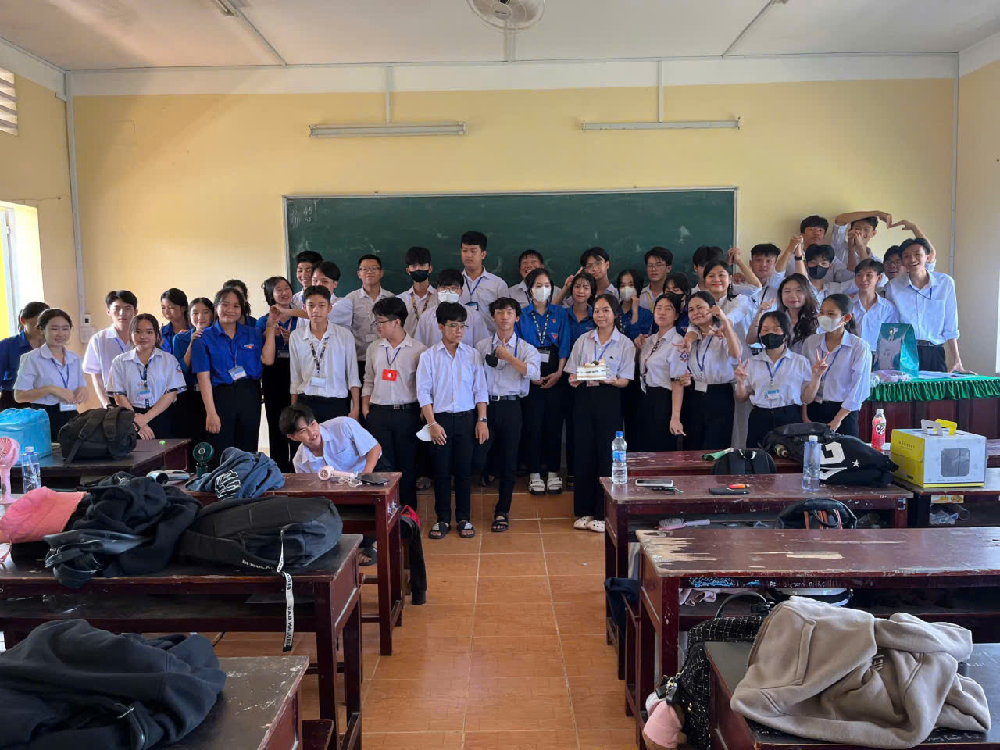
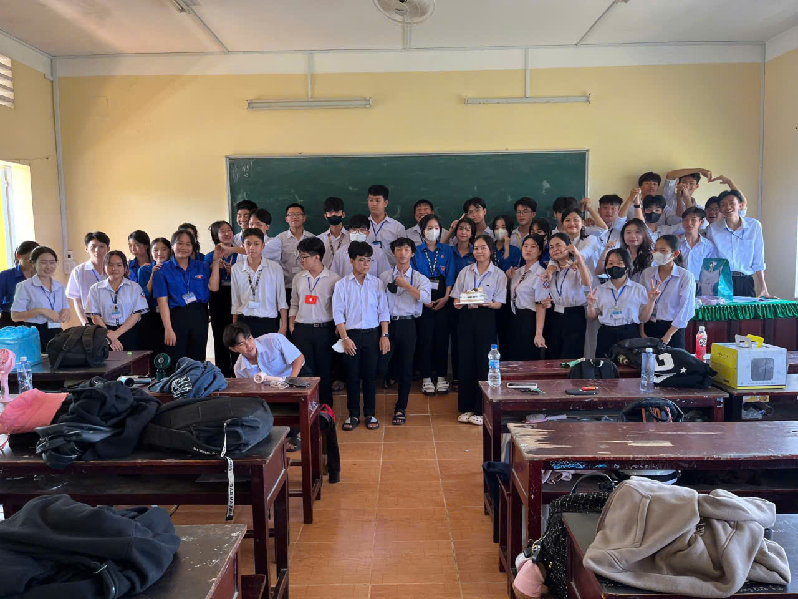

Bài giới thiệu
Chào mừng thầy cô và các bạn đến với báo tường của lớp 12A3. Báo tường là nơi lưu giữ những kỷ niệm đẹp của tuổi học trò – quãng thời gian hồn nhiên, trong sáng và đáng nhớ nhất trong cuộc đời mỗi người. Thông qua các bài viết, góc ảnh, góc âm nhạc và mục bình luận, tập thể lớp 12A3 mong muốn gửi gắm những cảm xúc chân thành về những năm tháng dưới mái trường thân yêu.
Kỷ Niệm Tuổi Học Trò Thân Thương
Tuổi học trò là quãng thời gian đẹp đẽ và đáng trân trọng nhất trong cuộc đời mỗi con người. Dưới mái trường thân yêu, chúng em đã cùng nhau học tập, vui chơi và trải qua biết bao kỷ niệm buồn vui. Những tháng ngày bên thầy cô và bạn bè sẽ mãi là hành trang quý giá, theo chúng em trên chặng đường tương lai.
Một Ngày Đến Trường – Một Ngày Yêu Thương
Một ngày học ở trường bắt đầu bằng những tiết học nghiêm túc, tiếp nối là những giờ ra chơi rộn ràng tiếng cười bên bạn bè. Chính những khoảnh khắc giản dị ấy đã tạo nên một tuổi học trò hồn nhiên, trong sáng và đầy kỷ niệm đáng nhớ.
Góc ảnh kỷ niệm
 


Nguồn: HS A3
Âm thanh tuổi học trò
Nguồn: GreenD
Khoảnh khắc đáng nhớ
Nguồn: Video sưu tầm từ Internet (phục vụ mục đích học tập)
Góc bình luận